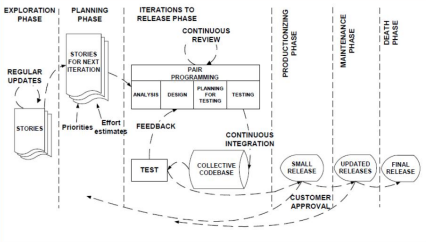

O Extreme Programming (XP) é um método de desenvolvimento ágil de software que tem como objetivo construir softwares de alta qualidade, priorizando o bem-estar da equipe de software. Considerado um dos primeiros métodos ágeis a ser desenvolvido, o XP se destaca por sua precisão na aplicação de práticas de engenharia adequadas ao processo de desenvolvimento.
O ciclo de vida do Extreme Programming (XP) pode ser dividido em seis fases distintas. A primeira delas é a Exploração, na qual o cliente define as histórias de usuário, a equipe de desenvolvimento se familiariza com as tecnologias e constrói um protótipo, podendo se estender por semanas ou meses. Em seguida, temos a fase de planejamento, que dura alguns dias e é responsável por estimar esforços, criar um cronograma e priorizar as histórias de usuário.
Após o planejamento, inicia-se a fase de iteração, que pode durar de 1 a 4 semanas cada uma, com foco em programação em pares e refatoração. Posteriormente, entramos nas fases de produção, nas quais são realizados testes adicionais e avaliação do software antes da entrega, e de manutenção, que envolve suporte contínuo e a possível incorporação de novos membros.
Por fim, a última fase do ciclo de vida do Extreme Programming é conhecida como encerramento, na qual ocorre o término do projeto quando não há mais histórias de usuário a serem desenvolvidas ou quando o sistema não atende mais às necessidades.
